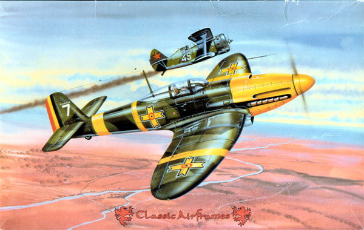
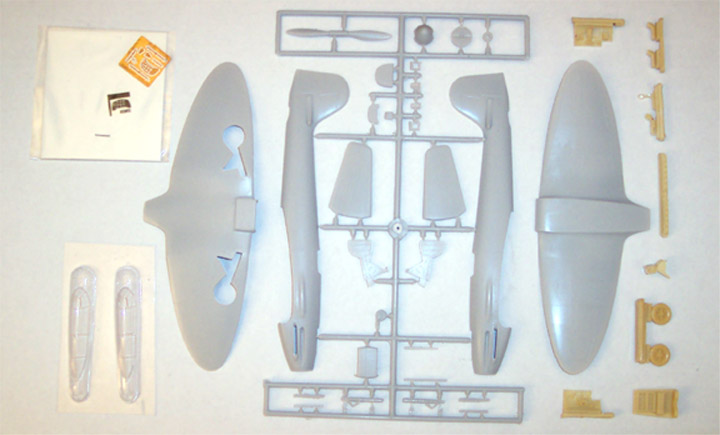
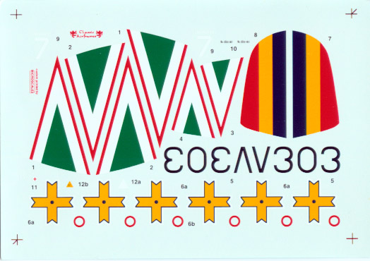
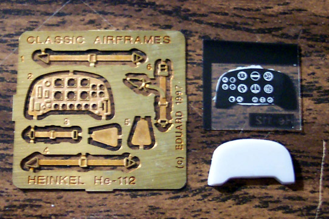
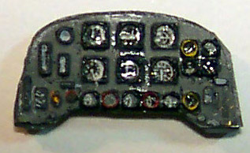
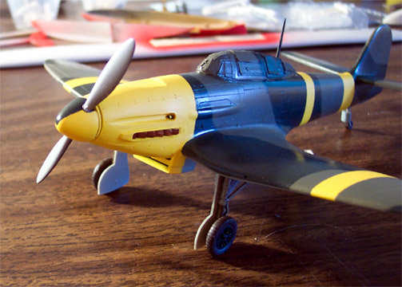
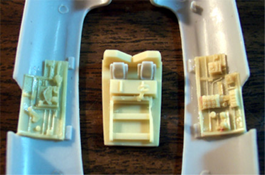
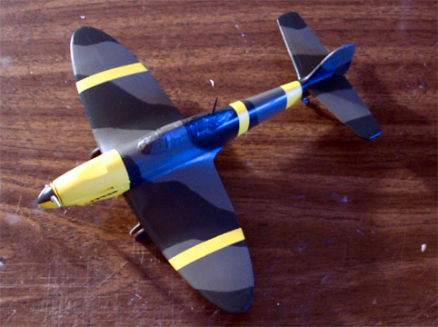
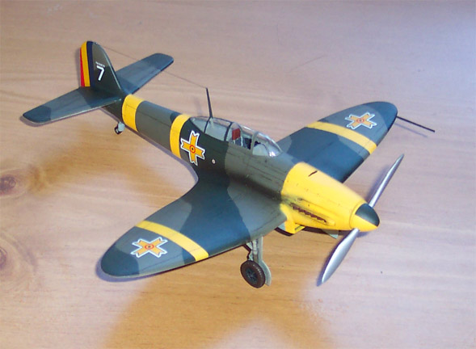
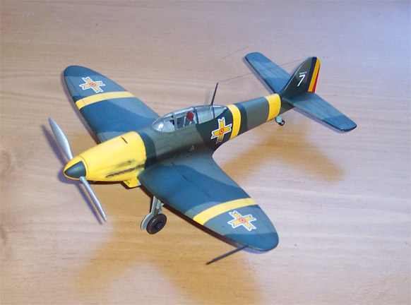

Heinkel He-112B

Kit #421
MSRP $29.95
Images, model and text copyright © 2003 by Matt Swan
In the mid 1930’s the Heinkel He-112 was the clear favorite to win the bid to rebuild the Luftwaffe. Ultimately it lost that bid to the Messerschmitt Bf-109 and became the poorest known production fighter of World War II. The story of the He-112’s obscurity is an interesting one.
The official request for a design was sent out as a single seat interceptor under the guise of a “sports aircraft”. The specification was sent to Heinkel, Arado, and Folke-Wulf and later to BFW due to their success with the Bf-108 “Taifun”. Primarily the twin brothers Walter and Siegfried Günter created Heinkel’s design. It began as “Projekt 1015” and was renamed the He-112. The primary source of inspiration for the 112 is the earlier He 70 "Blitz" which was a single engine, 4-passenger plane inspired by the famous Lockheed Orion mail plane.
The 112 A-0 was constructed entirely of metal, using a two spar wing and a monocoque fuselage with flush mounted rivets. The gear retracted outward from the low point of the wing's gull-bend, which resulted in a fairly wide 9m track, giving the plane excellent ground handling. In 1936 the RLM changed the orders for the series which gave Heinkel a chance to improve the 112, which they did by completely redesigning it into a totally new aircraft called the 112B — similar in name only. It's at this point that it becomes a truly modern plane that could compete head to head with the Bf 109.
The B series of the He-112 served with the Condor Legion in Spain, they were used by I./JG 331 in November of 1938 before being replaced with Bf-109C’s. The Japanese Navy purchased the V5 unit and it proved superior to the A5M2 in many ways. 30 units were delivered to Japan and used as training duties. In April of 1939 Romania took over 24 He-112B’s. When the first planes started arriving they were tested competitively against the locally designed IAR.80 prototype. This interesting and little known plane proved to be superior to the 112B in almost every way. At the same time the test flights demonstrated a number of disadvantages of the 112 in general, notably the underpowered engine and poor speed. The result of the fly-off was that the IAR.80 was ordered into immediate production, and orders for any additional He 112's were cancelled.
For a truly comprehensive history of the Heinkel He-112 and all of it’s variants take a look at Maury Markowitz’ History of the He-112

Recently I have had a “thing” for Romanian aircraft of World War II and this Classic Airframes kit fits right in with my plans to build a complete selection of Romanian aircraft. Many of you are already familiar with Classic Airframes but for those of you who are not this is a limited run injection molded kit that features a nice selection of resin cast parts for the cockpit and the engine exhaust shrouds. Included are two very nicely done main wheels and the tail gear. It includes two vacuformed canopies and a very nice sheet of decals for two aircraft. There is a very nice little acetate sheet for the instrument panel and a small fret of photo etched brass parts.
The injection-molded pieces display very fine recessed panel lines and, unfortunately, some orange peel roughness to the surfaces. All the main body pieces will require a light sand job before any construction can commence. There is a degree of flash on most of the parts but nothing out of the norm for a limited run kit and there are no locator pins on the kit.

I started this as a conventional, straight-forward build working with the cockpit area first. After the side panels and floor pan were painted and detailed I super-glued the side walls to the interior of the fuselage then test fit the floor pan – nope, not going to fit. This was the hardest part of the construction, getting that damn floor pan to fit in there. I shaved and sanded and test fit and glued my fingers together (more than once) before that thing would fit in there. Then I was finally able to close the fuselage. It was around this time that I was talking to Tom Cleaver and he set me straight. You have to sand the interior walls of the fuselage until they are paper thin then the completed cockpit will fit right in. Man did I feel stupid but I will remember this for the next Classic Airframes kit that I put together.
Before I closed the fuselage I used my trusty Welder’s Tip Drill to open up the gun ports in the nose. I cut short pieces of Evergreen styrene rod and drilled out the ends to act as gun barrels. These were glued in place and so were the unpainted exhaust manifolds then the fuselage went together.

After all the primary pieces were assembled, like the wings, elevators and fuselage, I packed the cockpit with tissue paper and airbrushed the area around the cockpit and the landing gear bays RLM 02. I removed the tissue paper and installed the headrest then masked the canopy. The aerial mast passes through the rear section of the canopy and I drilled out the hole for that, inserted the mast and placed a drop of superglue on the base and taped the canopy in place while the glue set. Then I could slide the canopy off the mast and prepare it to be glued in place with Testors Clear Parts cement.

After packing more tissue into the wheel wells I was ready to start painting. I put down a coat of Model Master primer gray then shot all the yellow areas. After drying these were masked off and the primary colors were started. I used Gunze-Sangyo RLM 70 Black/Green for my base color and for the backside of the propeller. The alternate color is RLM 82 and Gunze-Sangyo RLM 75 was used for the underside. My favorite part of painting is removing the masks after doing a multicolor job such as this one and it looked really nice as the masks came off. It felt like the classic movie scene where the guy has his eyes wrapped for a long time and finally the bandages come off – what will we see?!?!

Now I’m going to try something completely different. I have seen a lot of people on the forums talking about using Turpinoid and oil paints to wash and weather with so I will take the plunge. I went to Pat Catan’s Craft store and bought a bottle of Turpinoid and a tube of oil paint. I used a small artist’s mixing tray to mix a pea sized drop of oil paint with about two teaspoons of Turpinoid. Using a fine brush I wicked it into the panel lines and joint lines at the control surfaces. I started to have doubts right away. This stuff did not want to wick, it was very thick and syrupy, even the Turpinoid right out of the can was thick.
The next day I came back to start cleaning up the panel line with a Q-tip dipped in Turpinoid. Now keep in mind that the Future has had two or three days to cure before I started this process but the Turpinoid ate right through it. The top layers of paint came off and the yellow over spray from the first airbrushing was exposed. Now I’m getting pissed off cause this was looking so nice. Back to the paint room, touch up the camouflage and reapply some Future to get back to where we were. Uhg – what a pain in the butt.

All right, everything is back to square one now. I will not be trying that routine again for quite some time. Other than the initial problems with the cockpit and the Turpinoid adventure this has been a classic build and that’s not changing. After a few days of cure time the entire craft is coated with Future and the decals are applied. I did get a little heavy with some Micro-Sol and caused a large white spot on the wing when it reacted with the Future but another coat of Future and the spot disappeared. Another coat of Future to seal the decals and we are ready for an application of sludge wash which DOES NOT eat the underlying coats of paint. Some Tamiya X-19 smoke around the gun ports and exhaust stacks and it’s ready for the final coat of Polly Scale Clear Flat.
The front side of the propeller was done with Model Master Chrome Silver and the spinner was masked and painted per the kit directions. The landing gear was attached and sludge washed and the aerial is from some invisible thread colored with a permanent magic marker.
There you have it, a complete Classic Airframes Heinkel He-112B Propaganda fighter. It was a fun build and would have been easier if I had filed the inner fuselage down for the cockpit assembly and had not screwed around with the Turpinoid wash.

